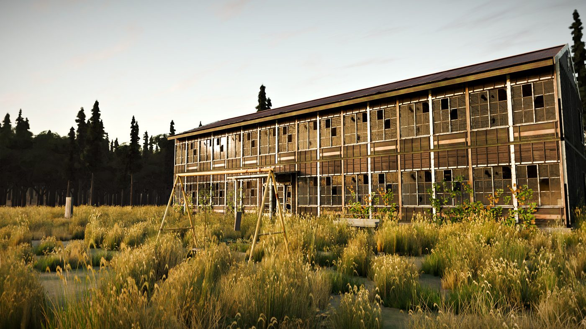

A closed wooden schoolhouse with 45 assets: classrooms, a gym, a music room and a library. A ready-made main stage for horror and exploration games at dusk.
Price: $7.99 · Black Friday Nov 27–30: $4.79 (40% off)
Japanese horror games, exploration, and nostalgic school stories. The strongest single-pack stage in the series.
| Formats | FBX / OBJ / GLB / Blender (.blend) |
|---|---|
| Textures | PBR — BaseColor, Roughness, Normal, AO (embedded in GLB) |
| Scale | Real-world, metres. Ground at Z=0 |
| Engines | Unity, Godot, Unreal Engine, Blender |
| License | Commercial use in finished works OK. No redistribution of raw files |
Yes — in finished games, films and renders. You may not redistribute or resell the raw asset files.
No. PBR textures are embedded in the GLB, so it works drag-and-drop in Godot and Blender.
Yes. Every pack in the series shares the same real-world scale and art style, so they combine into one village without clashing.
Or get everything: Japanese Countryside Complete Collection — $24.99 (Black Friday: $12.49)